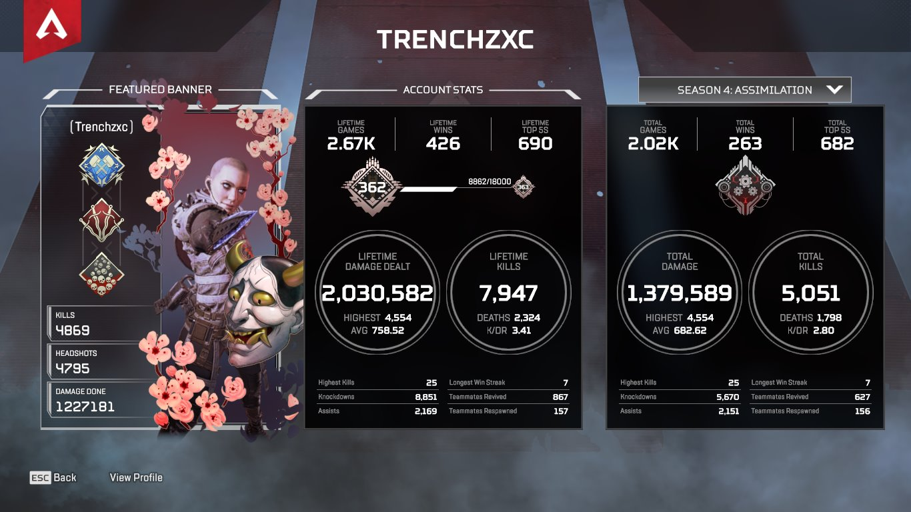
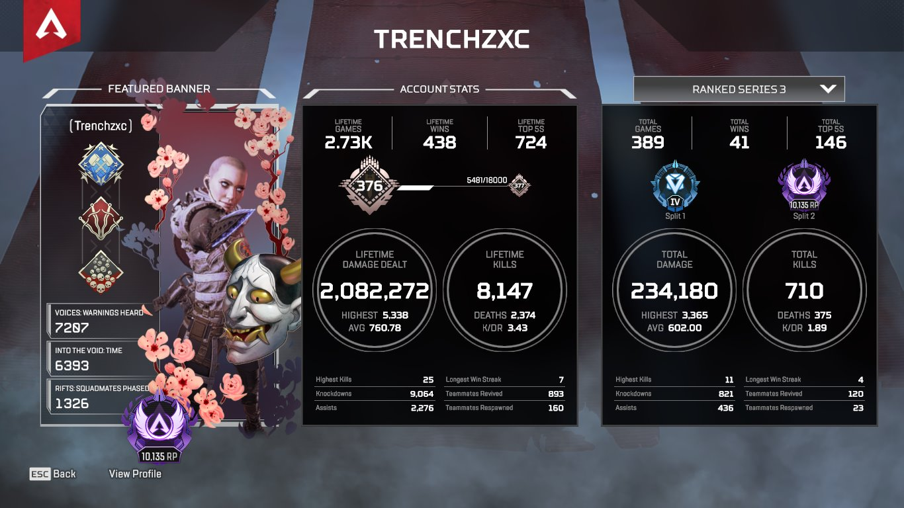
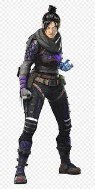
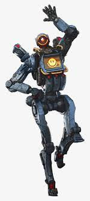

GAME PLAY
Apex Legends is an online multiplayer battle royale game featuring squads of three players using pre-made characters (called "Legends"), similar to those of hero shooters. Alternate modes have been introduced allowing for single and for two-player squads since the game's release. The game is free-to-play and monetized through microtransactions and loot boxes, which allow the player to spend both real money and in-game currency on cosmetic items, such as outfits for the Legends and new colors for weapons.
Each match generally features twenty teams of three-player squads. Players can join friends in a squad or can be matched randomly with other players. Before the match, each player on the squad selects one of the 15 playable characters (as of Season 7), with the exception that no character may be selected more than once by a squad. Each character in the squad has a unique design, personality, and abilities that provide different playstyles to the team. All teams are then placed on an aircraft that passes over the game map. One player in each squad is the jumpmaster, selecting when the squad should skydive out of the aircraft and where to land with the concurrence of the other squad members. However, players are free to deviate from the squad's path.
Once on the ground, the squad can scavenge for weapons, armor, and other equipment that is scattered around buildings, or in crates randomly distributed around the map, while keeping an eye out for other squads. Apex Legends includes a nonverbal communication "ping system" which allows players to use their game controller to communicate to their squad certain directions, weapon locations, enemies, and suggested strategies.While the game offers movement options similar to other shooters, it includes some of the gameplay features of previous Titanfall games, such as the ability to climb over short walls, slide down inclined surfaces, and use zip-lines to traverse an area quickly.
ACHIVEMENTS
In this game i play this like 12 hours a day because of the rank and sometimes i play starting 4am to grind my rank and the problem of this game when i was playing in year 2018-2019 there is a lot of cheater in that seasons but the current season rigth now is very nice for now and my highest rank in this game is Master (10k Points or MMR) and also im not playing competitive here just for fun and i will show you some of my screenshots.STATS and RANK
 
My main legends in this game:
Click the name of the legend to view the story of this legends and more


I dont have any clips or some screenshots of champions or win because i did not always screenshots some of winnings but i have deccent aim and greatly good and just check my stats and rank but my problem is my pc have some issue like the biggest problem is the frames or framdedrops and also the internet connection.